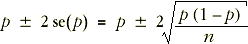
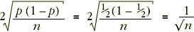

Reporting the accuracy from a survey or poll
Public opinion polls and other surveys often ask questions about a range of topics. Each question can be modelled as a random sample from some categorical population. Several proportions are usually estimated from the data that are collected and each of these point estimates can be associated with a standard error and confidence interval.
The 95% confidence interval for any such proportion is roughly:

Rather than giving separate confidence intervals for the individual proportions, the poll results are usually accompanied by a single value called the margin of error of the poll. This is the worst-case '±' value for a 95% confidence interval which occurs when p = 1/2.

This is the worst case scenario so the '±' values of the 95% confidence intervals for all proportions reported in the poll will be less than this value — sometimes considerably less.
The diagram below shows the 95% confidence intervals that would arise from samples of size n = 100 for all possible values of p. Drag the slider to see the widths of the confidence intervals.
Observe that the confidence interval is widest when p = 0.5 and narrowest when p is close to 0 or 1. (Note however that our guidelines on sample size imply that we should not be using this type of confidence interval for n = 100 when p is under 0.05 or over 0.95.)
Select Margin of error from the pop-up menu. Observe that
Example
A numerical example illustrates the use of margin of error in a survey.
Customer satisfaction survey
The table below shows the results from a survey of customers of the company Thermatrix. The company prides itself on good customer relations and intends to conduct a customer satisfaction survey at least one a year. The survey involved 115 customers who were randomly selected.
| Question | Yes | No |
|---|---|---|
| In general, were deliveries on time? | 63 | 52 |
| Were the contact people at Thermatrix helpful and courteous? | 86 | 29 |
| Was the pricing structure fair to your company? | 101 | 14 |
| Would you recommend Thermatrix to other companies? | 105 | 10 |
Since the sample size is n = 115, the margin of error for the poll is 0.093 — i.e. 9.3%.
Since approximately 1/2 of the respondents replied that deliveries were on time, a 95% confidence interval for the probability that a customer believes that deliveries are on time is approximately (63/115 ± 0.093). However properly calculated confidence intervals for the other questions would be narrower than this.